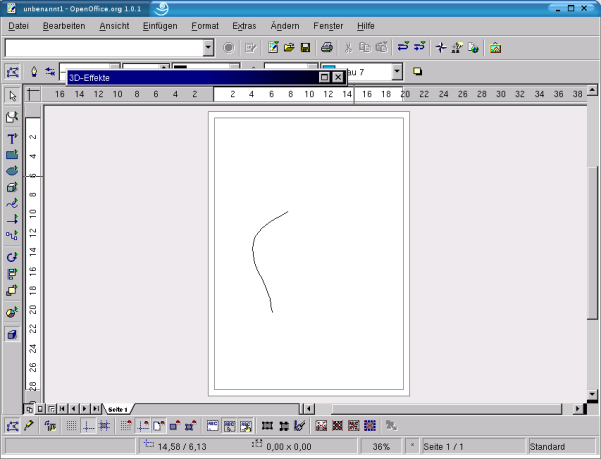
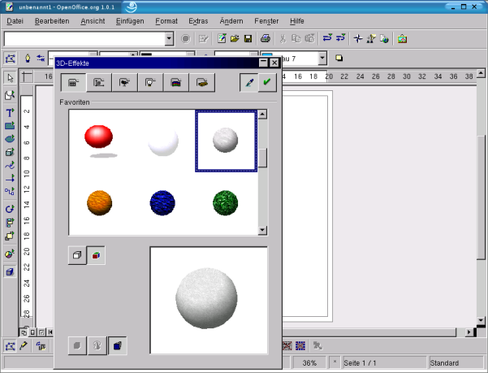
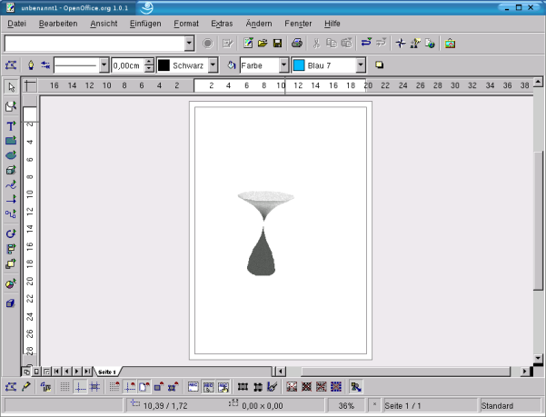

| [zurück] | [Hauptmenü] | [weiter] |
| [PDF] | ||
Erstellen eines einfachen 3D-Objektes

Abbildung
1: gezeichnete Kurve (Beispiel)
Ein 3D-Objekt können Sie auf die folgende
Weise ganz einfach erstellen:
Zeichnen Sie eine beliebige Kurve.

Abbildung
2: Dialogfeld 3D-Effekte
Betätigen Sie die Schaltfläche „3D-Controller“
 .
Es ist die unterste in der Werkzeugleiste.
Jetzt öffnet sich das Dialogfenster „3D-Effekte“.
.
Es ist die unterste in der Werkzeugleiste.
Jetzt öffnet sich das Dialogfenster „3D-Effekte“.
Hier betätigen Sie die Schaltfläche „Umwandeln in Rotationskörper“ und suchen sich in den Favoriten eine Form aus.
- Nun klicken Sie auf die
Schaltfläche „Zuweisen“
(grünes Häkchen).

Abbildung 3: 3D-Objekt Minimieren das Dialogfeld. So können Sie schnell noch Änderungen vornehmen.
Wenn Sie jetzt die Drehschaltfläche aktivieren, können Sie das Objekt beliebig drehen und so die gewünschte Ansicht des Objekts einstellen. Anfasser werden dann wiederum rot dargestellt.